← World gallery Every block, inspected.
97 block/state samples through the actual game renderer. Before and Now use the same overview; Detail uses the detailed zoom. Enlarged with nearest-neighbor pixels. Backgrounds and shadows come from the staged, daytime fixture. Tiny switches, transparent glass and half blocks preserve their silhouettes.
Refinements concentrate on material identity: stone versus bedrock, sand versus gravel, birch foliage, snow versus ice, wool, reeds, saplings, ore inclusions and quieter obsidian. Retained blocks are included for a complete audit.
Dirt Reviewed · retained Before 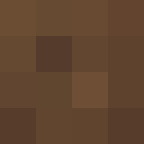
Now 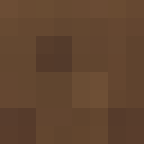
Detail Grass Reviewed · retained Before 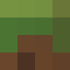
Now 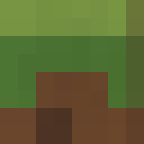
Detail Stone Reviewed · retained Before Now Detail Wood Reviewed · retained Before 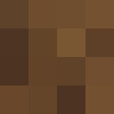
Now 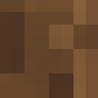
Detail Leaves Reviewed · retained Before Now 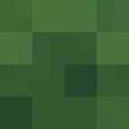
Detail IronOre Refined 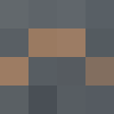
Before Now 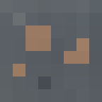
Detail GoldOre Refined Before 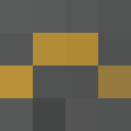
Now Detail DiamondOre Refined 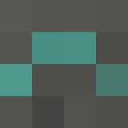
Before Now 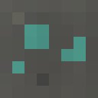
Detail CoalOre Refined 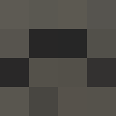
Before Now 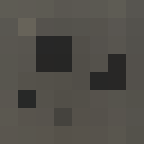
Detail Sand Refined 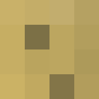
Before 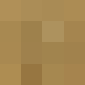
Now 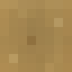
Detail Gravel Refined 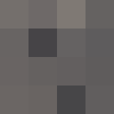
Before 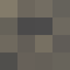
Now 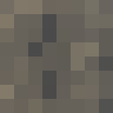
Detail Bedrock Refined Before Now 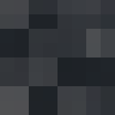
Detail Planks Reviewed · retained Before 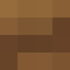
Now 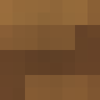
Detail CraftingTable Reviewed · retained 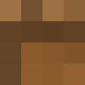
Before 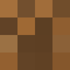
Now 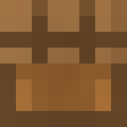
Detail Torch Reviewed · retained Before 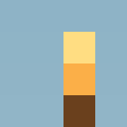
Now 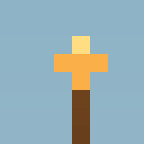
Detail Lever(false) Reviewed · retained Before Now 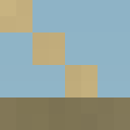
Detail Lever(true) Reviewed · retained Before 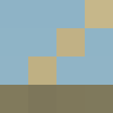
Now 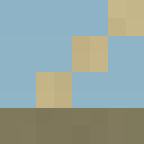
Detail StoneButton(0) Reviewed · retained Before Now 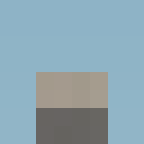
Detail StoneButton(4) Reviewed · retained Before Now Detail RedstoneTorch(false) Refined Before 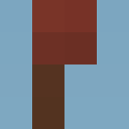
Now 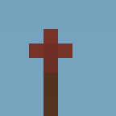
Detail RedstoneTorch(true) Refined Before 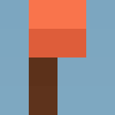
Now 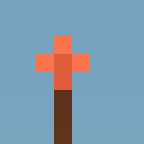
Detail Furnace Reviewed · retained 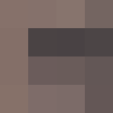
Before 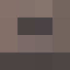
Now 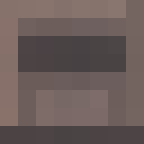
Detail Snow Refined 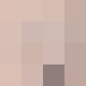
Before 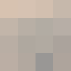
Now 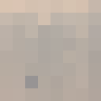
Detail Ice Refined 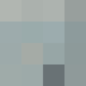
Before 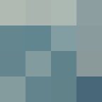
Now 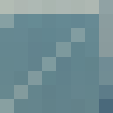
Detail Cactus Reviewed · retained 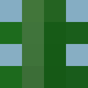
Before Now 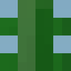
Detail DeadBush Reviewed · retained Before 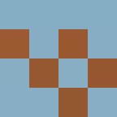
Now 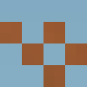
Detail BirchWood Reviewed · retained 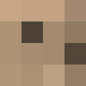
Before Now Detail BirchLeaves Refined Before Now Detail
RedFlower Reviewed · retained Before Now Detail YellowFlower Reviewed · retained Before Now Detail TallGrass Reviewed · retained Before Now Detail Water(1) Reviewed · retained Before Now Detail Water(4) Reviewed · retained Before Now Detail Water(8) Reviewed · retained Before Now Detail Lava(1) Reviewed · retained Lava(4) Reviewed · retained Lava(8) Reviewed · retained Before Now Detail Cobblestone Reviewed · retained Before Now Detail Obsidian Refined Before Now Detail
Farmland(0) Reviewed · retained Before Now Detail Farmland(7) Reviewed · retained Before Now Detail Crops(0) Reviewed · retained Before Now Detail Crops(3) Reviewed · retained Before Now Detail Crops(7) Reviewed · retained Before Now Detail RedstoneOre Refined Before Now Detail RedstoneDust(0) Reviewed · retained Before Now Detail RedstoneDust(7) Reviewed · retained Before Now Detail RedstoneDust(15) Reviewed · retained Before Now Detail Netherrack Reviewed · retained Before Now Detail SoulSand Reviewed · retained Before Now Detail Glowstone Reviewed · retained Before Now Detail NetherPortal Reviewed · retained Before Now Detail Tnt Reviewed · retained Before Now Detail PrimedTnt(1) Reviewed · retained Before Now Detail PrimedTnt(4) Reviewed · retained Before Now Detail Piston { extended: false, facing_right: false } Reviewed · retained Before Now Detail Piston { extended: false, facing_right: true } Reviewed · retained Before Now Detail Piston { extended: true, facing_right: false } Reviewed · retained Before Now Detail Piston { extended: true, facing_right: true } Reviewed · retained Before Now Detail StickyPiston { extended: false, facing_right: false } Reviewed · retained Before Now Detail StickyPiston { extended: false, facing_right: true } Reviewed · retained Before Now Detail StickyPiston { extended: true, facing_right: false } Reviewed · retained Before Now Detail StickyPiston { extended: true, facing_right: true } Reviewed · retained Before Now Detail StoneBricks Reviewed · retained Before Now Detail EndPortalFrame { filled: false } Reviewed · retained Before Now Detail EndPortalFrame { filled: true } Reviewed · retained Before Now Detail EndPortal Reviewed · retained Before Now Detail
EndStone Reviewed · retained Before Now Detail IronDoor(false) Reviewed · retained Before Now Detail
IronDoor(true) Reviewed · retained Before Now Detail SilverfishSpawner Reviewed · retained Before Now Detail Bed Reviewed · retained Before Now Detail Chest Reviewed · retained Before Now Detail
Glass Reviewed · retained Before Now Detail
WoodDoor(false) Reviewed · retained Before Now Detail
WoodDoor(true) Reviewed · retained Before Now Detail Ladder Refined Before Now Detail
StoneSlab Reviewed · retained Before Now Detail StoneStairs Reviewed · retained Before Now Detail EnchantingTable Reviewed · retained Before Now Detail Anvil Reviewed · retained Before Now Detail BrewingStand Reviewed · retained Before Now Detail BlazeSpawner Reviewed · retained Before Now Detail RedstoneRepeater { powered: false, delay: 2, facing_right: false, timer: 0, target_powered: false } Reviewed · retained Before Now Detail RedstoneRepeater { powered: false, delay: 2, facing_right: true, timer: 0, target_powered: false } Reviewed · retained Before Now Detail RedstoneRepeater { powered: true, delay: 2, facing_right: false, timer: 0, target_powered: true } Reviewed · retained Before Now Detail RedstoneRepeater { powered: true, delay: 2, facing_right: true, timer: 0, target_powered: true } Reviewed · retained Before Now Detail Wool Refined Before Now Detail
Sapling Refined Before Now Detail
SugarCane Refined Before Now Detail
Bookshelf Reviewed · retained Before Now Detail NetherWart(0) Reviewed · retained Before Now Detail NetherWart(1) Reviewed · retained Before Now Detail NetherWart(3) Reviewed · retained Before Now Detail BirchSapling Refined Before Now Detail
ZombieSpawner Reviewed · retained Before Now Detail SkeletonSpawner Reviewed · retained Before Now Detail Review findings and verification · Block catalog · Ore census before · Ore census now